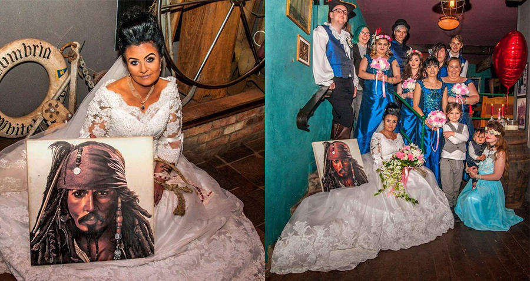

Best Of Funny News: Woman Marries 300-Year-Old Pirate Ghost

An Irish woman made funny news headlines this year after revealing that she had married the ghost of a 300-year-old Haitian pirate.
Amanda Teague, 45-years-old and unbothered by the 255-year age difference, married the ghost of Jack Teague, a Haitian pirate who allegedly sailed the seven seas in the early 1700s. Ironically, Mrs. Teague works as a Captain Jack Sparrow
impersonator in Ireland.
The pair first met – if you can call it meeting – in 2015, when Teague was lying in bed at her home in Drogheda, Ireland. She said she felt a ghostly presence in her room and continued to do so almost every night after. Six months after first
feeling the ghost's presence, Teague said she developed feelings for him. Together, they made plans to wed.
The wedding took place on a stormy day in July of 2016, and was "short, small, and functional." The registrar who recorded the marriage was present, as was a medium who Jack Teague was communicating through.
Teague, who took her spectral husband's last name, claims that she is the first person in the U.K. to marry a ghost – quite possibly true as it is not legal in the U.K. to marry a deceased person.
"We sailed into international waters so we could legally marry," Teague said. "It's not legal in the U.K. or Ireland to marry a deceased person, so we spoke to some lawyers and did it officially."
To be clear, the marriage is not expressly recognized by the law, though Teague says she followed procedures instructed to her by her lawyers that allowed her to bypass certain rules.
"I haven't been challenged yet," Teague said. "There was one government agent who asked me to explain my situation and I told him about spirituality and our connection. He just accepted that."